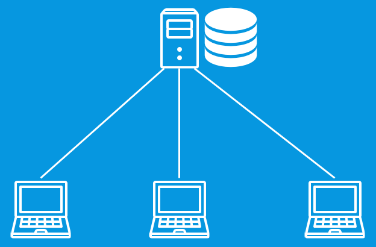
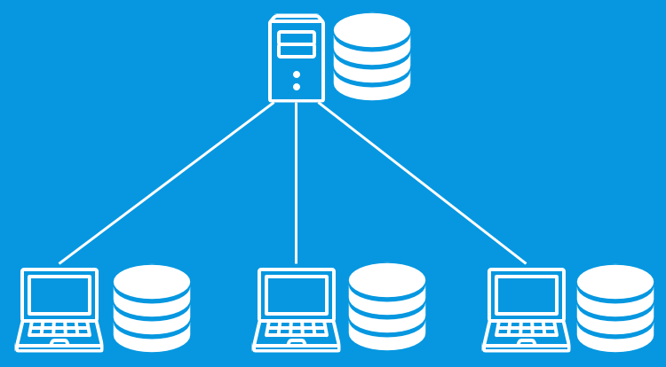

Git
Usage & Best Practices
SVN → Git
SVN → Git
SVN Repositories sind zentral organisiert

SVN → Git
Git Repositories sind verteilt organisiert

.git Remote "origin".git Local
SVN → Git
Revisionsnummern sind nicht fortlaufend
* d458b89 — updated readme with install instructions * 8101222 — added a README.md * 13a88cd — Initial Commit
Revisionsnummern sind SHA-1 Hashes
Revisionen können addressiert werden über SHA-1, HEAD (letzte Revision), HEAD~1 (vorletzte Revision), HEAD~2 etc.
SVN → Git
Branches und Tags sind keine Verzeichnisse sondern Zeiger auf einen Commit
SVN → Git
Die Git Historie kann verändert werden
Git Aktionen
Neues Repository erstellen
Neues Local-Repository git init
Remote-Repository hinzufügen git remote add origin http://host.com/repository.git
Ein existierendes Repository auschecken
Klonen eines Remote-Repository mit git clone http://host.com/path/to/repository.git erzeugt ein Local-Repository
Local-Repository besteht aus Working-Copy, Index und HEAD

add & commit
Änderung vorschlagen (zum Index hinzufügen
oder stagen
):
git add <dateiname>
git add .
Änderung bestätigen (zum HEAD hinzufügen
):
git commit -m "commit message"
branching
Der master Branch ist der default Branch.
Einen neuen Branch erzeugen git branch <branch>
In diesen Branch wechseln git checkout <branch>
Alle Branches auflisten git branch -a
Ein Branch ist nach dem hochladen git push origin <branch> für andere verfügbar
merge
Der aktuelle Branch wird mit git merge <branch> mit dem Branch <branch> zusammengeführt
Gab es im aktuellen Branch Änderungen, wird ein Merge Commit mit zwei Parent Commits erzeugt
Gibt es im aktuellen Branch keine Änderungen wird ein Fast Forward Merge durchgeführt.
push to remote
Mit git push origin <branch> werden Änderungen aus einem Branch an das Remote-Repository gesendet
Befinden sich bereits Änderungen auf dem Remote, muss vor dem git push zuerst ein git pull durchgeführt werden
update from remote
Um das lokale Repository mit den neusten Änderungen zu aktualisieren, werde diese zuerst mit git fetch in den Remote Tracking Branch heruntergeladen und dann mit git merge zusammengerführt
Der Befehl git pull führt beides gleichzeitig aus
tagging
Jeder Commit kann mit einem Tag markiert werden
git tag 1.0.0
git tag 1.0.0 <ref>
Best Practices
Änderungen rückgängig machen
Hinweise liefert immer git status
git checkout <file> Änderung in Working Copy zurücknehmen
git reset HEAD <file> Änderung im Index zurücknehmen
Änderungen rückgängig machen
git reset <ref> Änderung in Repository entfernen Demo ➜
git revert <ref> Änderung in Repository rückgängig hinzufügen Demo ➜
git revert -m 1 <ref> Wird ein Merge-Commit rückgängig gemacht, muss mit -m der Eltern Zweig angegeben werden, welcher beibehalten werden soll (kann mit git show <ref> ermittelt werden)
Commit Historie verändern
Veränderungen an der Historie sollten nur an Lokalen Commits vorgenommen werden
git commit --amend korrigiert den letzten Commit
git rebase -i <ref> fasst mehrere Commits zusammen ("squashing") oder verändert/löscht mehrere letzte Commits
Selektives Hinzufügen zum Index
git add -p ermöglicht das Übernehmen einzelner Hunks in den Index
Änderungen selektiv übernehmen
git cherry-pick <ref> überführt einzelne Commits aus einem Branch in den aktuellen Branch
Eine übersichtliche Commit Historie ist hierbei von Vorteil
Änderungen temporär verstecken
git stash Änderungen in Working Copy auf Stapel legen
git stash pop Änderung vom Stapel wieder anwenden
Merge-Konflikte auflösen
- Edit files and remove Conflict-Markers
git addgit commit -m "resolved merge conflict"
Suchen in der Historie
git log --oneline --decorate --graph --stat
git log <tag> -5
git log --author "name"
git log -p <datei> Alle Änderungen in einer Datei
git log -S <pattern>
git shortlog
Suchen in der Historie II
git log master.. Nur Änderungen im Branch (aus master abgezweigt)
git log ..origin/master Nur Änderungen von Remote
Commit Message
Die Commit Message hat einen Head und einen Body getrennt durch eine Leerzeile
git log --oneline zeigt nur den Head an, macht also die Historie übersichtlicher.
Branching Workflow
Use git flow